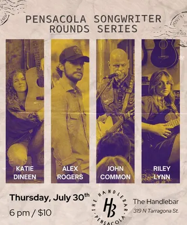
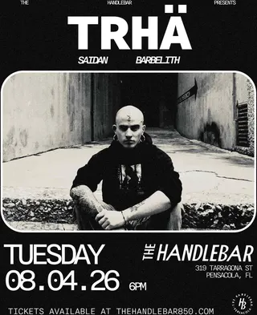
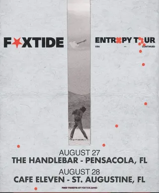
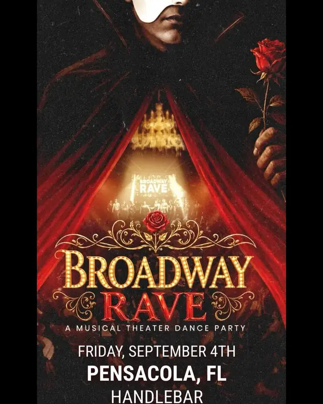
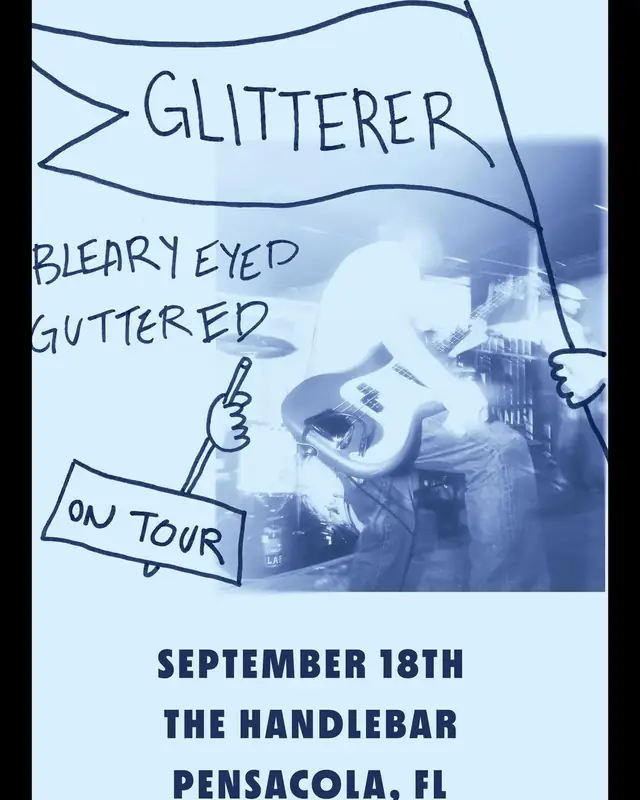
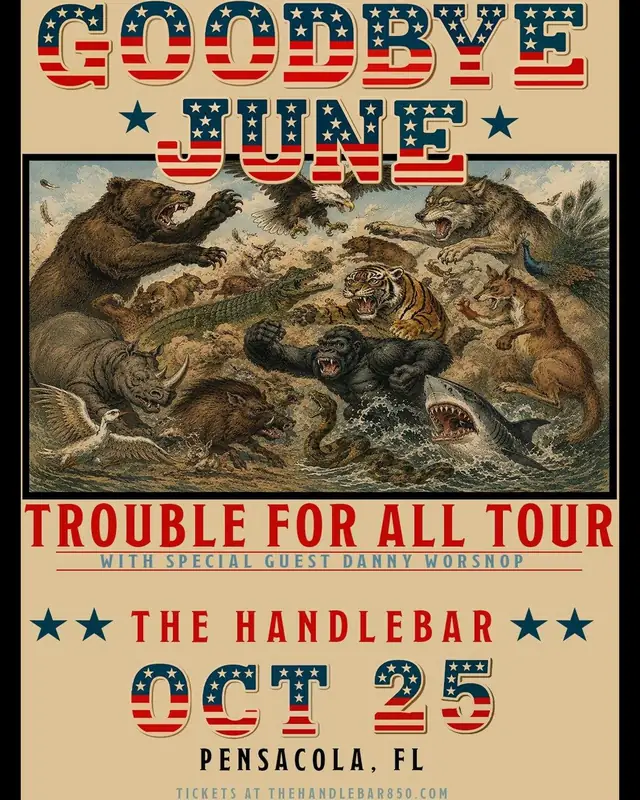
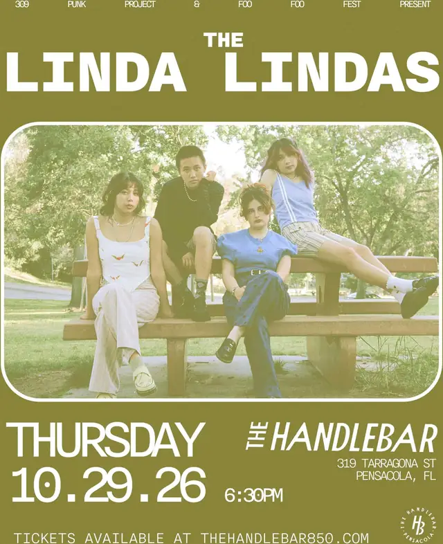
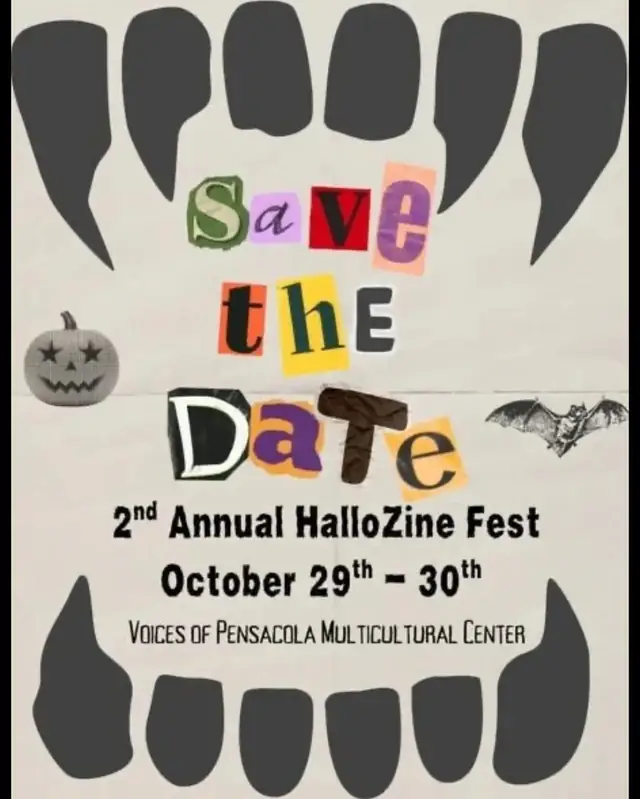
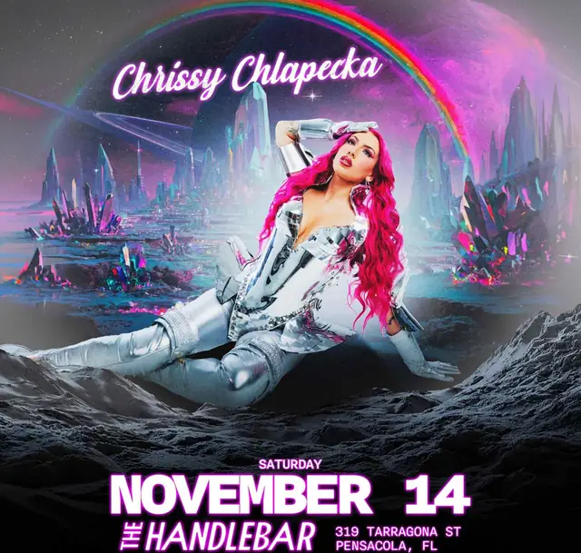

Sat Jul 18
![qr code to diypensacola.com](data:image/svg+xml;charset=utf-8,%3Csvg%20xmlns%3D%27http%3A%2F%2Fwww.w3.org%2F2000%2Fsvg%27%20width%3D%2729%27%20height%3D%2729%27%20class%3D%27segno%27%3E%3Cpath%20class%3D%27qrline%27%20stroke%3D%27%23000%27%20d%3D%27M2%202.5h7m1%200h4m2%200h1m3%200h7m-25%201h1m5%200h1m3%200h1m2%200h2m1%200h1m1%200h1m5%200h1m-25%201h1m1%200h3m1%200h1m1%200h2m2%200h2m2%200h1m1%200h1m1%200h3m1%200h1m-25%201h1m1%200h3m1%200h1m2%200h2m2%200h2m3%200h1m1%200h3m1%200h1m-25%201h1m1%200h3m1%200h1m2%200h1m4%200h1m3%200h1m1%200h3m1%200h1m-25%201h1m5%200h1m1%200h1m2%200h2m1%200h1m1%200h1m1%200h1m5%200h1m-25%201h7m1%200h1m1%200h1m1%200h1m1%200h1m1%200h1m1%200h7m-16%201h1m1%200h2m-13%201h1m1%200h1m3%200h2m1%200h2m1%200h1m2%200h2m2%200h1m2%200h1m1%200h1m-24%201h5m1%200h1m3%200h1m3%200h2m1%200h2m1%200h1m1%200h2m-24%201h1m4%200h10m1%200h1m1%200h4m1%200h1m-23%201h1m1%200h1m3%200h4m2%200h2m1%200h1m1%200h1m1%200h1m-22%201h1m2%200h4m1%200h3m1%200h1m1%200h2m2%200h2m4%200h1m-24%201h1m1%200h1m1%200h1m3%200h2m2%200h1m1%200h5m3%200h2m-25%201h2m2%200h1m1%200h3m1%200h3m2%200h3m3%200h2m1%200h1m-23%201h4m3%200h2m4%200h3m1%200h3m-22%201h3m1%200h1m1%200h1m1%200h5m3%200h5m2%200h1m-16%201h2m6%200h1m3%200h1m3%200h1m-25%201h7m1%200h2m1%200h1m2%200h1m1%200h1m1%200h1m1%200h1m3%200h1m-25%201h1m5%200h1m2%200h1m1%200h2m1%200h3m3%200h1m2%200h1m-24%201h1m1%200h3m1%200h1m3%200h1m1%200h1m2%200h6m2%200h1m-24%201h1m1%200h3m1%200h1m4%200h1m1%200h1m1%200h1m1%200h1m2%200h1m1%200h2m-24%201h1m1%200h3m1%200h1m1%200h2m1%200h1m4%200h1m2%200h3m1%200h2m-25%201h1m5%200h1m2%200h2m1%200h1m1%200h1m1%200h1m2%200h2m-21%201h7m1%200h1m3%200h1m3%200h3m2%200h1m2%200h1%27%2F%3E%3C%2Fsvg%3E) scan me
scan mefree · take one
diypensacola
punk · metal · hardcore · diy — pensacola, fl
shows this week · · diypensacola.com
this week

Sun Jul 19all ages
In Gloom, Innerwounds, Fire Came Disparity, Wraithbearer

Sun Jul 19sliding
Accursed Creator, Rotted Remains, Serrated FL, Stress Wound +2 more
next week

Tue Jul 21
High Fade

Wed Jul 22
No Complications, King In Yellow, Tirra Lirra

Fri Jul 24benefit
Our House (in Progress) - Diy Art Exhibition

Fri Jul 24
Obituary, Modown, Exformation, D.R.E.A.D.

Fri Jul 24sliding
Rabbithole, Ghostlings, Lucid, Pamm

Sat Jul 25
Rainn Forrest, Bea Hurd

Sat Jul 25
Sapphic Saturday
later

Tue Jul 28all ages
Internal Suffering, Gut Fucked, Rotted Remains

Thu Jul 30free
Spidershed, Future Compost, Caca del Diablo

Thu Jul 30
Katie Dineen, Alex Rogers, John Common, Riley Lynn

Tue Aug 4
Trhä, Saidan, Barbelith

Sat Aug 8slidingbenefit
Caca Del Diabo, Mourning Glories, Bangarang Peter, Spider Bucket +1 more

Fri Aug 14sliding
Katie Dineen, Logan Pilcher, Tanner Lee Gray

Sat Aug 15
Heroes For Ghosts, Spiritless, Afterdusk, Caving In
Tue Aug 18
Southpaw, Arcline

Thu Aug 20
Grave Chorus, Conflict of Interests, Coastal High School, IHATESUNDAYS

Thu Aug 27
Bryan Raymond, Ramblin Ricky Tate, STUFY, Good Night Geezer

Thu Aug 27
Foxtide, Braymores
Tue Sep 1
Cheekface, Catbite

Fri Sep 4
Broadway Rave

Fri Sep 11
Geordie Greep
Fri Sep 11
We Can’t Help It If We’re From Florida

Sat Sep 12
NVSN, The Autumn Descent, Caving In, Hopout

Mon Sep 14
Archers, Autumn Kings, Pinknoise, Coldstate

Fri Sep 18
Glitterer, Bleary Eyed, Guttered

Wed Sep 23
Dopethrone, Fister, Gnarled

Sat Sep 26
Lilith's Demise, Delta Hate, Claymore, Stay Lost

Sun Sep 27
Eyehategod, Whores, Nomas

Sat Oct 10
Silent Theory, Discrepancies, Sick Century

Thu Oct 22
Fenix Tx, Scream Out Loud, Color The Void

Sun Oct 25
Goodbye June, Danny Worsnop

Thu Oct 29
The Linda Lindas

Thu Oct 29
2nd Annual HalloZine Fest

Sat Nov 14
Chrissy Chlapecka
there's more where this came from ↓
the radio
an endless station shuffling live footage from 918+ acts that have played here. put it on and leave it on.
diypensacola.com → tune in
the forever archive
1184 shows kept since 2011, every flyer saved. search any band, room, or year.
diypensacola.com → archive
band pages
every act gets a page: full gig history, flyer wall, and live footage. look up the band you just saw.
diypensacola.com → archive → bands
support your local scene.
ripped from diypensacola.com · updated july 18, 2026 · fix your hearts or die
your show here
booking something? it goes on the calendar free.
diypensacola.com/submit.html
diypensacola.com/submit.html
nobody by that name on the calendar, yet.
no shows on the calendar yet
the scene's between shows, or a flyer just hasn't been added yet. listings go up by hand, so they trail the flyers by a day or two. know of one that should be here?
july 2026
august 2026
september 2026
october 2026
| sun | mon | tue | wed | thu | fri | sat |
|---|---|---|---|---|---|---|
| 1 | 2 | 3 | ||||
| 4 | 5 | 6 | 7 | 8 | 9 | 10Silent Theory, Discrepancies, Sick Century |
| 11 | 12 | 13 | 14 | 15 | 16 | 17 |
| 18 | 19 | 20 | 21 | 22Fenix Tx, Scream Out Loud, Color The Void | 23 | 24 |
| 25Goodbye June, Danny Worsnop | 26 | 27 | 28 | 29The Linda Lindas2nd Annual HalloZine Fest | 30 | 31 |
november 2026
- Sat Nov 14 Chrissy Chlapecka
july 2026
 Sat Jul 18 ICE Out Now! Justice for Lorenzo, Joan and All Victims of ICE Terror
Sat Jul 18 ICE Out Now! Justice for Lorenzo, Joan and All Victims of ICE Terror- Sun Jul 19 In Gloom, Innerwounds, Fire Came Disparity, Wraithbearer
- Sun Jul 19 Accursed Creator, Rotted Remains, Serrated FL, Stress Wound, Basilissa, Pierce
- Tue Jul 21 High Fade
- Wed Jul 22 No Complications, King In Yellow, Tirra Lirra
- Fri Jul 24 Our House (in Progress) - Diy Art Exhibition
- Fri Jul 24 Obituary, Modown, Exformation, D.R.E.A.D.
- Fri Jul 24 Rabbithole, Ghostlings, Lucid, Pamm
- Sat Jul 25 Rainn Forrest, Bea Hurd
- Sat Jul 25 Sapphic Saturday
- Tue Jul 28 Internal Suffering, Gut Fucked, Rotted Remains
- Thu Jul 30 Spidershed, Future Compost, Caca del Diablo
- Thu Jul 30 Katie Dineen, Alex Rogers, John Common, Riley Lynn
august 2026
- Tue Aug 4 Trhä, Saidan, Barbelith
- Sat Aug 8 Caca Del Diabo, Mourning Glories, Bangarang Peter, Spider Bucket, Sideswept Bangs
- Fri Aug 14 Katie Dineen, Logan Pilcher, Tanner Lee Gray
- Sat Aug 15 Heroes For Ghosts, Spiritless, Afterdusk, Caving In
- Tue Aug 18 Southpaw, Arcline
- Thu Aug 20 Grave Chorus, Conflict of Interests, Coastal High School, IHATESUNDAYS
- Thu Aug 27 Bryan Raymond, Ramblin Ricky Tate, STUFY, Good Night Geezer
- Thu Aug 27 Foxtide, Braymores
september 2026
- Tue Sep 1 Cheekface, Catbite
- Fri Sep 4 Broadway Rave
- Fri Sep 11 Geordie Greep
- Fri Sep 11 We Can’t Help It If We’re From Florida
- Sat Sep 12 NVSN, The Autumn Descent, Caving In, Hopout
- Mon Sep 14 Archers, Autumn Kings, Pinknoise, Coldstate
- Fri Sep 18 Glitterer, Bleary Eyed, Guttered
- Wed Sep 23 Dopethrone, Fister, Gnarled
- Sat Sep 26 Lilith's Demise, Delta Hate, Claymore, Stay Lost
- Sun Sep 27 Eyehategod, Whores, Nomas
october 2026
- Sat Oct 10 Silent Theory, Discrepancies, Sick Century
- Thu Oct 22 Fenix Tx, Scream Out Loud, Color The Void
- Sun Oct 25 Goodbye June, Danny Worsnop
- Thu Oct 29 The Linda Lindas
- Thu Oct 29 2nd Annual HalloZine Fest
november 2026
- Sat Nov 14 Chrissy Chlapecka